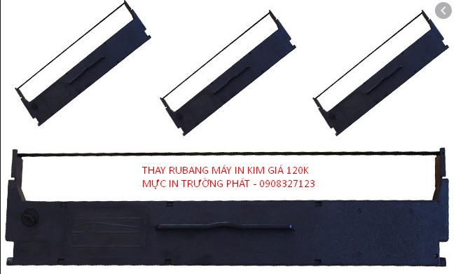
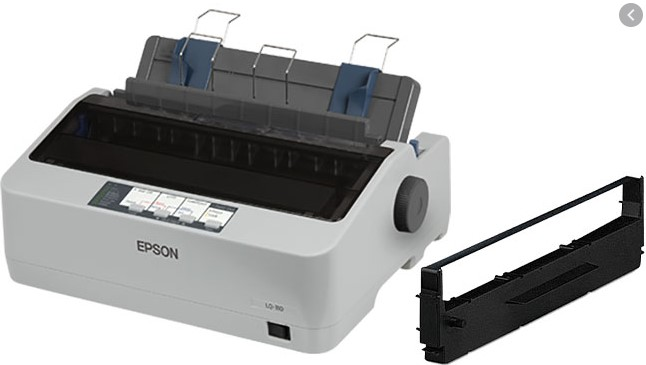
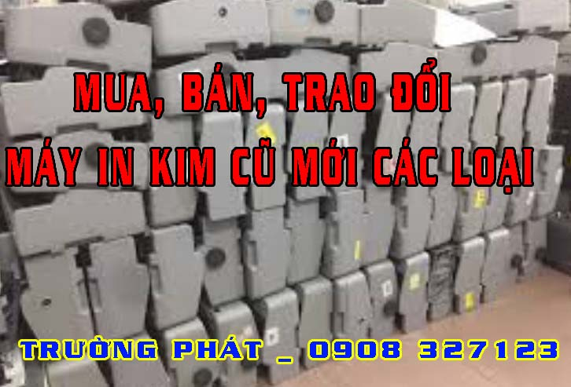

Thay Ruy băng máy in kim Epson LQ310 LQ300 LQ2190
Thay mực máy in hóa đơn (rubang máy in kim)
Ruy băng máy in kim, chính là mực của máy in có khi gọi là Thanh mực, Ribbon, Băng mực máy in hóa đơn.
Xem thêm: Ưu Và Nhược Điểm Của Máy In Kim?
Máy in kim là thiết bị sử dụng in bill, in hóa đơn, in phiếu giao hàng( 3 liên, 5 liên) lưu giữ chứng từ, sử dụng trong doanh nghiệp, cửa hàng, công ty, bênh viện, ngân hàng.
Bạn cần thay ruy băng cho máy in kim giá rẻ ? Nạp mực cho máy in hóa đơn nhanh tại Tp.HCM? Không cần phải đem máy in đến tận nơi công ty hoặc cửa hàng. Hãy để Mực in Trường Phát giúp bạn làm việc đó với giá phải chăng và tốc độ nhanh nhất.

Những Lợi Ích Đối Với Quý Khách Hàng
- Phục vụ tận nơi – nhanh chóng
- Dịch vụ thay rubang chất lượng tại nhà.
- Nạp mực máy in giá rẻ – tiết kiệm chi phí cho khách hàng.
- Luôn nhận trách trách nhiệm nếu có sự cố xảy ra.
- Nạp mực máy in, sửa máy in, máy tính, máy photocopy luôn đi kèm với chế độ bảo hành.
- Bản in luôn đẹp sau khi thay mực
- Chỉ nhận thanh toán khi khách hàng hài lòng về chất lượng và dịch vụ
Chất Lượng Dịch Vụ Mang Lại
- Với đội ngũ kỹ thuật nhiều năm kinh nghiệm trong lĩnh vực máy in và máy tính, rãi đều tại các quận huyện Tp HCM như: quận Bình Tân, quận 1, quận 3, quận 5, 6, 10, 11, quận Phú nhuận, quận tân bình, quận Tân phú …
- Chúng tôi luôn mong muốn đem đến dịch vụ nhanh & chất lượng nhất, cùng với chế độ hậu mãi và bảo hành Uy tín.
- Nắm bắt nhu cầu, chất lượng đẹp của Quý công ty, doanh nghiệp, cũng như hộ gia đình. Chúng tôi luôn nhắc nhở mỗi KTV phải luôn lấy quy tắt ” khách hàng là thượng đế ” để phục vụ tốt nhất, có được niềm tin của quý khách hàng là sự thành công của chúng tôi
- Luôn có kỹ thuật túc trực tại quận Tp HCM, khi quý khách gọi sẽ có kỹ thuật đến ngay trong vòng 20′ – 30′.
Vì Sao Chọn Dịch Vụ Thay Ruy Băng Máy In Kim LQ310, LQ300, LQ2190 Tại Trường Phát?
Xem thêm: Ruy Băng Máy In Kim Epson Là Gì?
- Ruy băng có xuất xứ nguồn gốc rõ ràng.
- Linh kiện luôn được chọn lựa sàn lọc kỹ trước khi thay cho khách hàng.
- Luôn đảm bảo độ bền cũng như chất lượng của Ruy băng máy in kim Epson LQ 310, 300, 2190 luôn hoạt động ở chế độ tốt nhất.
- Khi quý khách thay Ruy băng Epson của chúng tôi luôn được hỗ trợ và bảo hành nhanh chóng.
- Được hưởng những ưu đãi về giá thành khi từ 2 cái trở lên.
- Được hỗ trợ tư vấn miễn phí qua zalo, điện thoại, teamview…

Chi Phí Cho Việc Thay Ruy Băng Máy In Epson hợp lý
Về việc giá thành khách hàng hoàn toàn yên tâm khi sử dụng dịch vụ. Với phương châm tiết kiệm 30% chi phí về mức thấp nhất cho khách hàng và đó cũng là một trong những yếu tố giúp chúng tôi tạo được lòng tin nơi khách hàng, nhưng luôn đảm bảo về chất lượng sản phẩm tốt.
- Dùng Cho Các Dòng Máy In: LQ 300+ 300 +II: 120K
- Dùng Cho Các Dòng Máy In: LQ 310: 120K
- Dùng Cho Các Dòng Máy In: LQ 2170 – 2180 - 2190…: 250K
- Dùng Cho Các Dòng Máy In: LQ 590: 240K
Xem thêm: Hướng dẫn thay thế Rubang máy in kim
Có nhều dịch vụ cung cấp kèm theo:
- Tư vấn, hỗ trợ qua Teamview, Ultraview miễn phí
- Dịch vụ Nạp mực máy in tại nhà : epson, Brother, Canon, Hp, Samsung,… tận nơi giá rẻ tại TPHCM.
- Nạp mực máy in màu Epson, Canon, Brother,… tại nhà
- Thay băng mực cho máy in kim với giá rẻ
- Sửa chữa máy tính, máy in, máy photocopy cực nhanh giá rẻ
- Nhận bảo trì hệ thống máy in, máy tính tại các cơ quan trường học,…
- Cung cấp linh kiện chính hãng, máy in hóa đơn cũ các loại

Chuyên cung cấp máy in kim cũ LQ310 giá 2t2 bảo hành 6 tháng, máy còn đẹp 90%. Bảo hành tận nơi miễn phí khu vực TPHCM
và các dòng máy in kim A3, A4 các loại LQ 350, 590… vui lòng liên hệ để có giá tốt
Dowload driver máy in kim Epson
bạn theo đường dẫn sau và đánh máy mình cần dowload là ok nhé: https://download.epson-biz.com/modules/dot/
Các SP có driver:
DFX-
DLQ-
FX-
LQ-
- LQ-1150
- LQ-1150II
- LQ-1310
- LQ-1600KIIIH
- LQ-1900KIIH
- LQ-2080
- LQ-2090/LQ-2090C
- LQ-2090CII/LQ-2090CIIN
- LQ-2090H
- LQ-2090HIIN
- LQ-2090II/LQ-590II
- LQ-2090IIN/LQ-590IIN
- LQ-2180
- LQ-2190/LQ-2190C
- LQ-2590H
- LQ-2680K
- LQ-300+
- LQ-300+II
- LQ-300K+II
- LQ-300KH
- LQ-310
- LQ-350
- LQ-50/LQ-50K/LQ-55K
- LQ-520K
- LQ-580
- LQ-590
- LQ-590H
- LQ-590HII/LQ-2090HII
- LQ-590KII/LQ-595KII/LQ-1600KIVH/LQ-136KWII
- LQ-601K
- LQ-610K
- LQ-610KII/LQ-615KII
- LQ-630/LQ-630K
- LQ-630KII
- LQ-635C
- LQ-635KII
- LQ-680 (For Taiwan)/LQ-680C
- LQ-680KPRO
- LQ-680PRO
- LQ-690/LQ-690C
- LQ-690K
- LQ-730K
- LQ-730KII/LQ-735KII/LQ-82KF
- LQ-790K
LX-
PLQ-
- PLQ-20/PLQ-20M
- PLQ-20C/PLQ-20CM
- PLQ-20D/PLQ-20DM
- PLQ-20K/PLQ-20KM
- PLQ-22/PLQ-22M/PLQ-22KM
- PLQ-22CCS/PLQ-22CCSM
- PLQ-22CS/PLQ-22CSM
- PLQ-22KCS/PLQ-22KCSM
- PLQ-30
- PLQ-30C/PLQ-30CM
- PLQ-30K/PLQ-30KM
Liên hệ ngay Hotline 0908 327 123 để chúng tôi phục vụ bạn nhanh chóng và tốt nhất.
Không tự khắc phục được? Mực In Trường Phát nhận sửa máy in tận nơi TP.HCM 24/7 – kỹ thuật có mặt trong ngày, báo giá trước khi sửa, bảo hành 1 tháng. Hotline 0908.327.123 (Zalo). → Xem dịch vụ sửa máy in tận nơi.
Cần nạp mực hoặc sửa máy in tận nơi? Mực In Trường Phát có mặt trong 30 phút tại TP.HCM — in test trước khi tính tiền, bảo hành 1 tháng.
0908.327.123 · 0819.007.394 (Zalo cả 2 số)